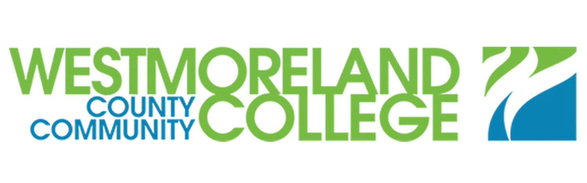
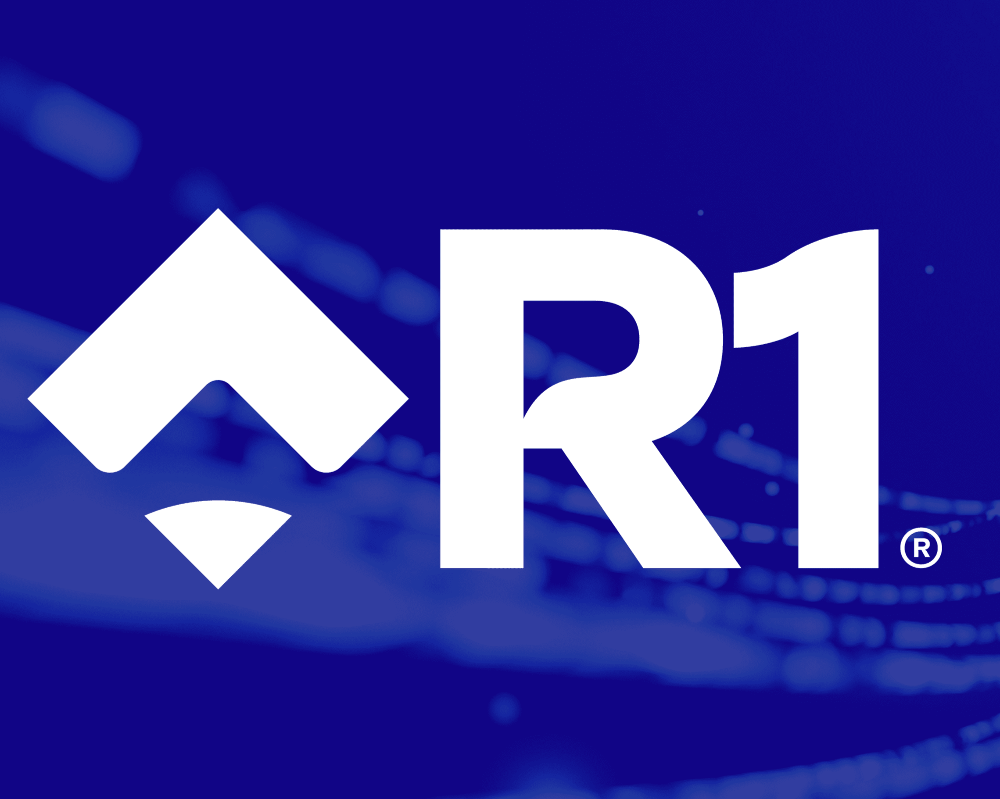
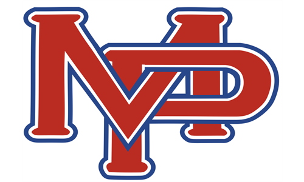
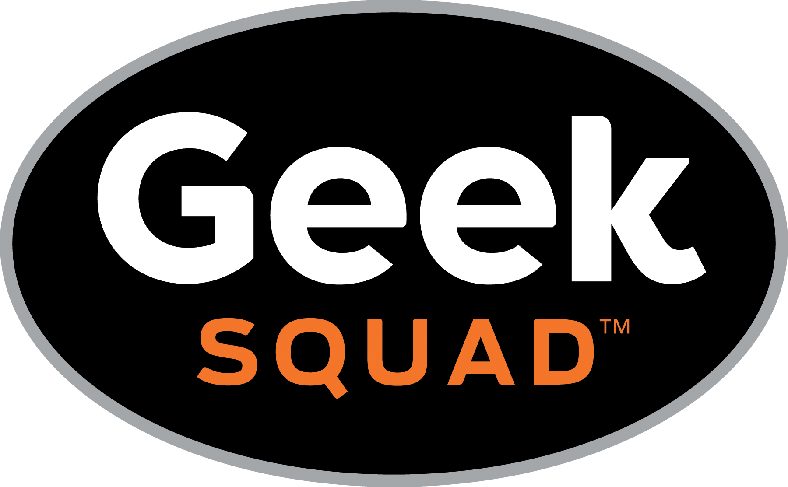

Welcome to my portfolio. I'm Noah Lawrence, a Computer Information Systems student with hands-on
experience building web applications and full-stack projects using JavaScript, Python, HTML, CSS,
and SQL. I enjoy creating practical, user-focused solutions and continuously building my skills as a developer.
Through my coursework, projects, and technical background, I have developed experience in software development,
database design, debugging, and problem-solving. My time working in enterprise IT has also strengthened my
ability to troubleshoot issues, think systematically, and adapt quickly to new technologies and workflows.
This website highlights my background, skills, and projects as I work toward beginning my career in software development.
Thank you for visiting, and please feel free to reach out if you'd like to connect or discuss potential opportunities.
I recently completed my Bachelor of Science in Computer Information Systems at Pennsylvania Western University. Through my coursework and hands-on projects, I developed a strong foundation in technology, business systems, and software development.
My studies helped me build practical skills in database design, application development, and problem-solving. These experiences strengthened my ability to understand technical systems and apply that knowledge in real-world situations.
In addition to technical coursework, my academic experience gave me a broader understanding of business concepts and organizational processes. This combination of technical and business knowledge has helped me see how technology can support efficiency, decision-making, and long-term growth.
Now that I have completed my degree, I am focused on applying what I have learned toward a career in software development and information systems, where I can contribute, continue learning, and grow professionally.

.
Degree
Associate of Science (A.S.)
Major
Computer Science
Graduation Date
August 2023
.
At Westmoreland County Community College, I earned an Associate of Science in Computer Science and built a strong foundation in programming, mathematics, and analytical thinking. My coursework introduced me to core computer science concepts and helped strengthen my overall problem-solving approach.
Through classes and hands-on projects, I gained practical experience with Java and application development. These projects gave me the opportunity to apply programming concepts in structured ways while improving my ability to design, build, and troubleshoot software solutions.
My studies also included challenging coursework in areas such as Calculus and Discrete Mathematics, which helped sharpen my logical reasoning and technical thinking. That academic foundation continues to support the way I approach development and problem-solving today.
I graduated with Honors and earned a 3.52 GPA, an achievement that reflects my commitment to growth, consistency, and academic success. My time at Westmoreland played an important role in preparing me to continue my education and pursue a career in technology.
Experience

Company
R1 RCM Inc.
Role
US Enterprise IT Tech I
Tenure
April 2024 - March 2025
As a US Enterprise IT Technician, I diagnosed and resolved software, hardware, and application issues for enterprise users in a remote support environment. This role strengthened my troubleshooting, root-cause analysis, and documentation skills while giving me experience supporting system stability during infrastructure updates and organizational changes. Working within a structured enterprise setting also reinforced my ability to solve technical problems efficiently and communicate clearly across teams.

Company
Mount Pleasant Area School District
Role
Assistant to the IT Department
Tenure
June 2022 - August 2023
As an IT Department Assistant, I supported device deployment, system updates, and technical troubleshooting across a district-wide environment. My responsibilities included diagnosing hardware issues, verifying software and security updates, and assisting with warranty-related assessments and user-caused damage cases. This experience helped me build a strong foundation in technical support, device management, and practical problem-solving.

Company
Best Buy
Role
Geek Squad Agent
Tenure
October 2021 - January 2022
As a Geek Squad Agent, I diagnosed and addressed hardware and software issues across a wide range of consumer devices while guiding customers through technical problems in a clear and professional way. I also managed service appointments and repair intake processes, which strengthened my organizational skills and ability to work effectively in a fast-paced support environment. The role helped me further develop customer communication, troubleshooting, and hands-on technical support experience.
Projects
Smith's Golf Grips
.
.
Description
Smith’s Golf Grips is a full-stack business website built for a golf club regripping service,
designed to showcase services, pricing, and brand identity while giving customers a clear way
to learn about the business and place inquiries online. The project is organized with separate
folders for admin functionality, styling, JavaScript, images, and supporting pages, which reflects
a more structured build than a simple static landing page. The repository also includes PHP files
and a SQL schema, showing that the site was built with backend and database support in mind rather
than serving only front-end content. GitHub lists the project as primarily JavaScript, with additional
PHP, CSS, and HTML, highlighting a multi-technology stack and a more complete web development workflow.
Overall, the project demonstrates my ability to build a polished small-business website while working across
front-end design, site structure, and backend-oriented functionality.
Rosewater Grill is a full-stack restaurant website project developed as part of a collaborative
team environment using HTML, CSS, JavaScript, PHP, and MySQL. The project was designed to support
both the customer-facing side of a restaurant website and the functional side of online ordering,
with features tied to menu presentation, ordering workflows, payment processing, and database integration.
Working on this project gave me experience contributing to shared codebases through Git and GitHub, troubleshooting
backend and frontend issues, and helping connect interface design with real application logic. It also strengthened
my understanding of team-based development, version control, and how different parts of a web application must work
together to create a smooth user experience. Overall, the project reflects both my technical development skills
and my ability to collaborate effectively on a more complex web-based system.